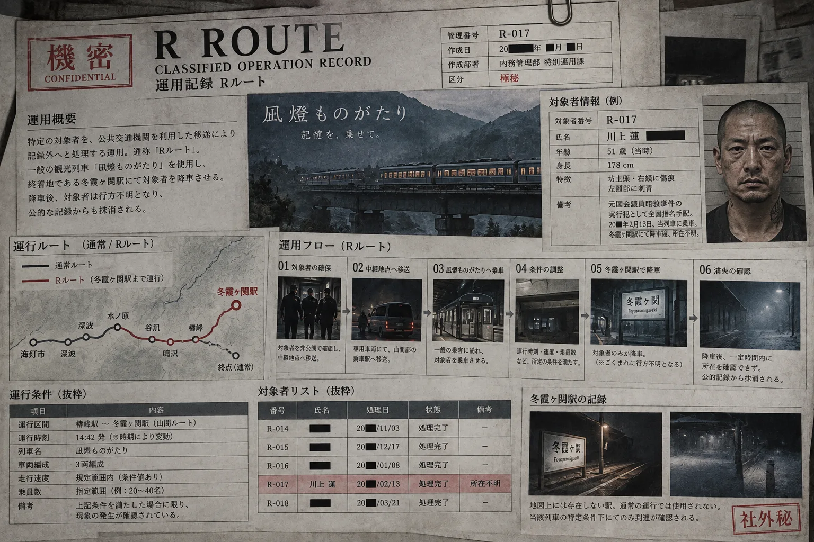

DATE
日付
- 1月〜2月
- 第2金曜日
01 / RESTRICTED
R ROUTE
OPERATION RECORD
本記録は冬霞ヶ関駅の研究報告ではない。指定対象者を帰還不能状態へ移行させるための運用計画および実施記録である。
02 / OPERATION FLOW
Rルートは、依頼元から指定された対象者を確保し、冬霞ヶ関駅まで移送した上で、帰還不能状態へ移行させる特殊運用である。
単なる列車運行の名称ではなく、対象者選定から処理記録作成までを含む一連の業務を指す。

03 / REQUEST ORIGIN
対象者の選定および処理要請は外部依頼元が行う。霧嶺運行サービス株式会社の担当範囲は、対象者受領後の実行および運行管理に限定される。
Rルートは、対象者の存在を重大なリスクと判定した国家機関・企業・巨大組織等が利用する非公開インフラとして運用される。
| 依頼元区分 | 案件区分 | 機密指定 |
|---|---|---|
| ████省 ████室 | 国家機密 | R |
| ████委員会 | 特別審査対象 | R |
| ████ホールディングス | 内部保全 | R |
| 国外案件 | 機密指定 | R |
04 / TARGET LOG
対象区分に犯罪歴の有無は含まれない。依頼元に対する情報上・組織上の危険度を処理判断に使用。
| 対象番号 | 所属／分類 | 案件分類 | 依頼元 | 処理結果 |
|---|---|---|---|---|
| R-001 | ████ | ████ | ████ | 完了 |
| R-002 | 機密情報接触者 | 情報保全 | ████ | 完了 |
| R-003 | ████ | ████ | ████ | 完了 |
| R-004 | 中央省庁 | 機密情報漏洩 | ████省 | 完了 |
| R-005 | 内部告発者 | 内部情報持出 | ████ | 完了 |
| R-006 | ████ | ████ | ████ | 完了 |
| R-007 | 重大事件関係者 | 関係者保全 | ████ | 完了 |
| R-008 | ████ | ████ | ████ | 完了 |
| R-009 | ████ | 機密情報接触 | ████ | 完了 |
| R-010 | ████ | ████ | ████ | 完了 |
| R-011 | ████重工 | 内部資料持出 | ████ホールディングス | 完了 |
| R-012 | 組織離脱者 | 関係離脱 | ████ | 完了 |
| R-013 | ████ | ████ | ████ | 完了 |
| R-014 | ████組織 | 関係離脱 | ████████ | 完了 |
| R-015 | ████ | 内部告発 | ████ | 完了 |
| R-016 | ████ | ████ | ████ | 完了 |
| R-017 | 重大事件関係者 | 山本誠一議員暗殺事件 | ████████ | 完了 |
05 / SUBJECT DETAIL


司法機関への引渡しは不可。逮捕時の供述による関係者露見の可能性があるため、司法手続きへ移行する前にR処理へ移行。
06 / TRANSFER LOG
07 / REQUIRED CONDITIONS
警告：以下条件の逸脱時は対象消失を保証できないため、R運用を中止すること。
DATE
TIME
WEATHER
TRAIN
STATION
08 / OBSERVATION
R条件成立時、冬霞ヶ関駅で複数名が降車した場合、降車者から無作為に1名が対象となる。
年齢・性別・職業・座席位置・降車順との相関は確認されていない。
降車者が1名のみの場合、当該1名が必ず対象となる。
複数名から無作為に1名
対象者1名のみ降車
09 / PHASE3 VERIFICATION

| 項目 | 規定 | 実測 | 判定 |
|---|---|---|---|
| 日付 | 1〜2月・第2金曜日 | 2026.02.13（金） | 適合 |
| 撮影時刻 | 到着後 | 16:08 | 適合 |
| 気象 | 降雪・-2℃以下 | 降雪・-3.2℃ | 適合 |
| 旧山間ルート進入 | 15:28〜15:34 | 15:31 | 適合 |
| 冬霞ヶ関駅到着 | 16:03〜16:07 | 16:05 | 適合 |
| 分岐進入速度 | 38km/h前後 | 38km/h | 適合 |
| 旧第3トンネル | 42km/h前後 | 42km/h | 適合 |
| 駅進入速度 | 15km/h以下 | 14km/h | 適合 |
| 停車位置 | 基準点±80cm | +21cm | 適合 |
| 停車時間 | 3分30秒〜5分 | 4分18秒 | 適合 |
| 降車人数 | 1名 | 1名 | 対象指定成立 |
R-017を確実に対象とするため、日時・気象・速度・停止位置・停車時間・降車人数を事前調整した特別回送と判定。
10 / ACTIVE OPERATION
CURRENT CASE / 運用承認済
11 / END OF RECORD
案件登録、承認、対象確保、移送、運行の各工程は現在も通常業務として継続。
対象者への事前通知：不要